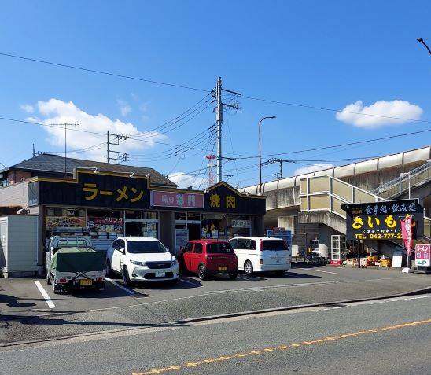
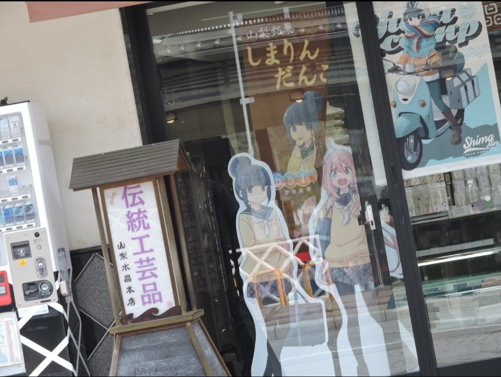
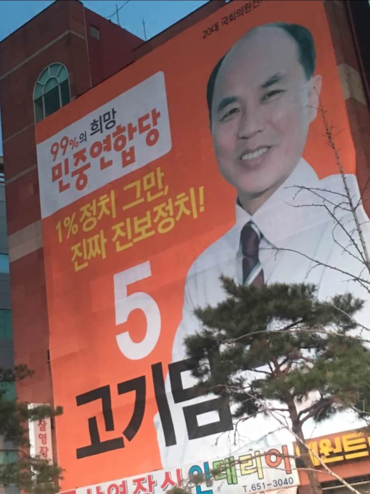

10月5日 デザイン演習課題
1枚目
画像を表示(40%)

この写真は、私が今日（10月11日）に撮った写真です。
この看板があるお店は、私が通っていた神奈川県相模原市の高校の近くにある「彩門」という焼肉屋さんです。
焼肉とラーメン、どちらかが大きく書いてある看板は多くありますが、この２つが共存している看板はあまりないと思います。
お店の中はというと、看板のようにお店の右半分はコンロがある焼肉が食べられる席、左半分はラーメンや定食が食べられる席と分けられています。
2枚目
画像を表示(40%)

この写真は、高校を卒業した後に友達５人で山梨県にキャンプに行った際に身延駅というの駅の近くにあるお土産屋さんで撮った写真です。
これは看板と周りの背景も含めて面白いなと感じたのですが、伝統工芸品という昔から伝わってきた物の看板の横に、大きくアニメのポスターやパネルがあるのは結構珍しいなと感じました。
ちなみにこのパネルのアニメは「ゆるキャン△」という、お店がある身延町をモデルにしたアニメなので町おこし的な理由で工芸品の看板と並んであるのかなと考えました。
3枚目
画像を表示(40%)

この写真は約5年前、私が中学2年生の春休みにサッカーの遠征で韓国に行った際に撮った写真です。
この看板はなんの広告なのかは韓国語なのでわかりませんが、5，6階建てのビルにこんなに大きく掲げられていたことも珍しいですが、
韓国の広告であるならなぜもっとBTSのようなアイドルみたいな人を起用せずこの人にしたのかも気になりました。
まとめ
この3枚の写真のように私自身ががどういった理由でこのようなデザインや組み合わせになったのかと考えた看板を前に撮った写真のフォルダや、実際に自分で探しに行ったりなどを行い、観察し考えることができました。